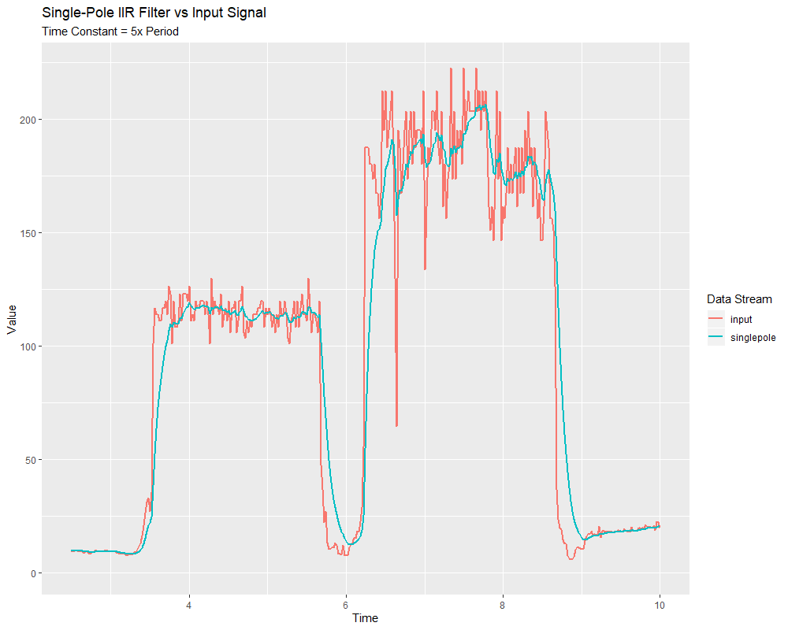
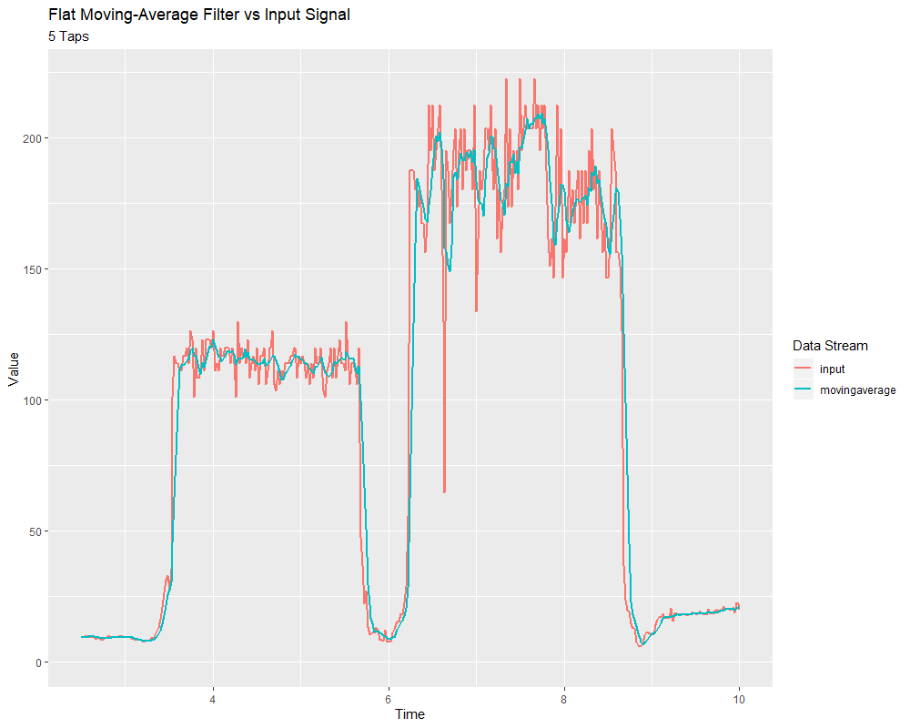
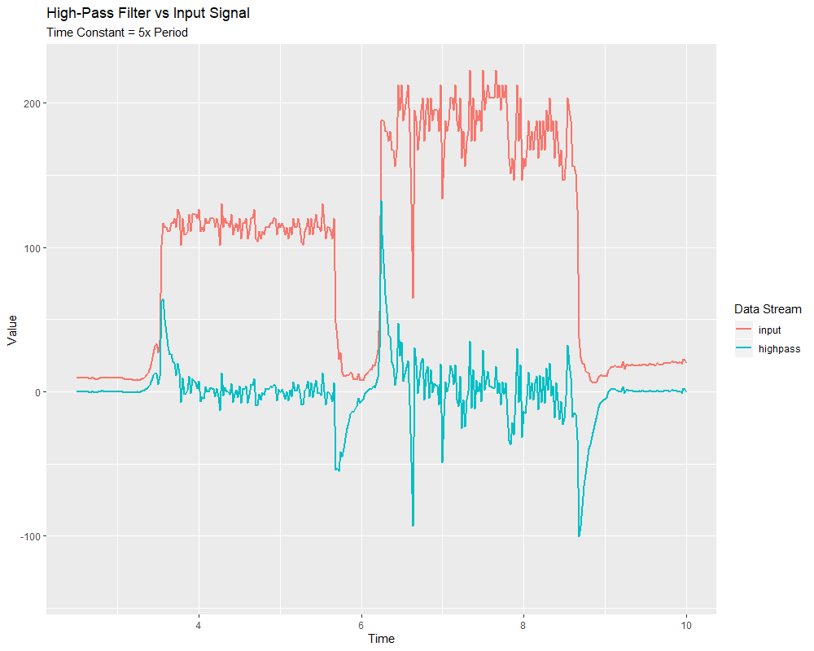

Linear Filters
The first (and most commonly-employed) sort of filter that WPILib supports is a linear filter - or, more specifically, a linear time-invariant (LTI) filter.
An LTI filter is, put simply, a weighted moving average - the value of the output stream at any given time is a localized, weighted average of the inputs near that time. The difference between different types of LTI filters is thus reducible to the difference in the choice of the weighting function (also known as a “window function” or an “impulse response”) used. The mathematical term for this operation is convolution.
There are two broad “sorts” of impulse responses: infinite impulse responses (IIR), and finite impulse responses (FIR).
Infinite impulse responses have infinite “support” - that is, they are nonzero over an infinitely-large region. This means, broadly, that they also have infinite “memory” - once a value appears in the input stream, it will influence all subsequent outputs, forever. This is typically undesirable from a strict signal-processing perspective, however filters with infinite impulse responses tend to be very easy to compute as they can be expressed by simple recursion relations.
Finite impulse responses have finite “support” - that is, they are nonzero on a bounded region. The “archetypical” FIR filter is a flat moving average - that is, simply setting the output equal to the average of the past n inputs. FIR filters tend to have more-desirable properties than IIR filters, but are more costly to compute.
Linear filters are supported in WPILib through the LinearFilter class (Java, C++).
Creating a LinearFilter
Note
The C++ LinearFilter class is templated on the data type used for the input.
Note
Because filters have “memory”, each input stream requires its own filter object. Do not attempt to use the same filter object for multiple input streams.
While it is possible to directly instantiate LinearFilter class to build a custom filter, it is far more convenient (and common) to use one of the supplied factory methods, instead:
singlePoleIIR
The singlePoleIIR() factory method creates a single-pole infinite impulse response filter which performs exponential smoothing. This is the “go-to,” “first-try” low-pass filter in most applications; it is computationally trivial and works in most cases.
// Creates a new Single-Pole IIR filter
// Time constant is 0.1 seconds
// Period is 0.02 seconds - this is the standard FRC main loop period
LinearFilter filter = LinearFilter.singlePoleIIR(0.1, 0.02);
// Creates a new Single-Pole IIR filter
// Time constant is 0.1 seconds
// Period is 0.02 seconds - this is the standard FRC main loop period
frc::LinearFilter<double> filter = frc::LinearFilter<double>::SinglePoleIIR(0.1_s, 0.02_s);
The “time constant” parameter determines the “characteristic timescale” of the filter’s impulse response; the filter will cancel out any signal dynamics that occur on timescales significantly shorter than this. Relatedly, it is also the approximate timescale of the introduced phase lag. The reciprocal of this timescale, multiplied by 2 pi, is the “cutoff frequency” of the filter.
The “period” parameter is the period at which the filter’s calculate() method will be called. For the vast majority of implementations, this will be the standard main robot loop period of 0.02 seconds.
movingAverage
The movingAverage factory method creates a simple flat moving average filter. This is the simplest possible low-pass FIR filter, and is useful in many of the same contexts as the single-pole IIR filter. It is somewhat more costly to compute, but generally behaves in a somewhat nicer manner.
// Creates a new flat moving average filter
// Average will be taken over the last 5 samples
LinearFilter filter = LinearFilter.movingAverage(5);
// Creates a new flat moving average filter
// Average will be taken over the last 5 samples
frc::LinearFilter<double> filter = frc::LinearFilter<double>::MovingAverage(5);
The “taps” parameter is the number of samples that will be included in the flat moving average. This behaves similarly to the “time constant” above - the effective time constant is the number of taps times the period at which calculate() is called.
highPass
The highPass factory method creates a simple first-order infinite impulse response high-pass filter. This is the “counterpart” to the singlePoleIIR.
// Creates a new high-pass IIR filter
// Time constant is 0.1 seconds
// Period is 0.02 seconds - this is the standard FRC main loop period
LinearFilter filter = LinearFilter.highPass(0.1, 0.02);
// Creates a new high-pass IIR filter
// Time constant is 0.1 seconds
// Period is 0.02 seconds - this is the standard FRC main loop period
frc::LinearFilter<double> filter = frc::LinearFilter<double>::HighPass(0.1_s, 0.02_s);
The “time constant” parameter determines the “characteristic timescale” of the filter’s impulse response; the filter will cancel out any signal dynamics that occur on timescales significantly longer than this. Relatedly, it is also the approximate timescale of the introduced phase lead. The reciprocal of this timescale, multiplied by 2 pi, is the “cutoff frequency” of the filter.
The “period” parameter is the period at which the filter’s calculate() method will be called. For the vast majority of implementations, this will be the standard main robot loop period of 0.02 seconds.
Using a LinearFilter
Note
In order for the created filter to obey the specified timescale parameter, its calculate() function must be called regularly at the specified period. If, for some reason, a significant lapse in calculate() calls must occur, the filter’s reset() method should be called before further use.
Once your filter has been created, using it is easy - simply call the calculate() method with the most recent input to obtain the filtered output:
// Calculates the next value of the output
filter.calculate(input);
// Calculates the next value of the output
filter.Calculate(input);